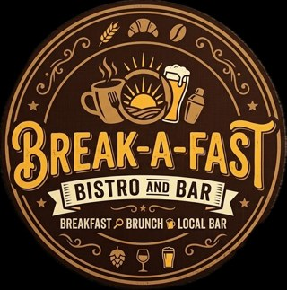

Traditional Flavour. Modern Spirit.
More than a restaurant
Break-a-Fast Bistro and Bar is a growing food brand delivering handcrafted pastries, signature cinnamon rolls, frozen snacks, breakfast solutions and event catering, all designed to bring people together through great food.
We combine traditional, homemade quality with modern presentation, from a box of Biscoff cinnamon rolls for the office to a full local bar of sobolo, pito and palm wine for 500 wedding guests.
Explore the menu
Our Mission
To deliver high-quality handcrafted food products that bring comfort, convenience and satisfaction to every customer.
Our Vision
To become a leading local food brand known for innovative pastries, frozen snacks, breakfast specialties and catering excellence.
Why customers choose us
🥐Freshly handcraftedEvery batch made with care.
⭐Premium ingredientsNo shortcuts on quality.
🎁Attractive presentationReady to gift or serve.
❄️Fresh & frozenOptions for every need.
✍️Custom ordersBuilt around your event.
🛵Reliable deliveryArranged to suit you.
👨👩👧For everyoneIndividuals to large events.
💛Made with loveServed with joy.